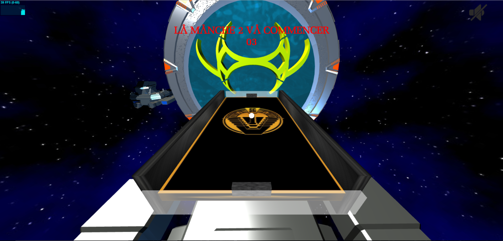
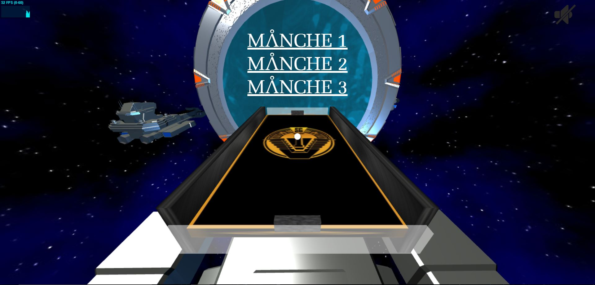
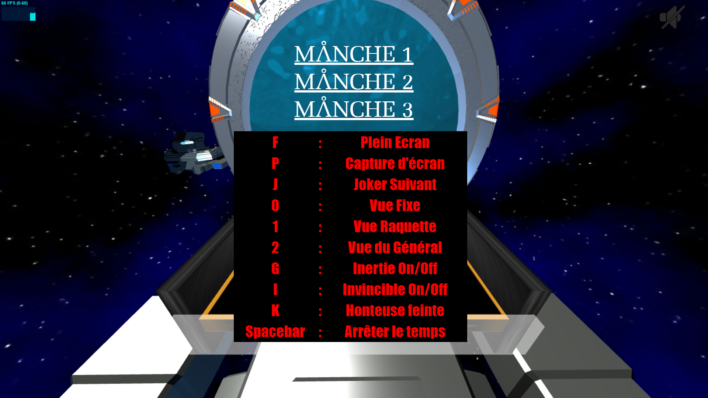
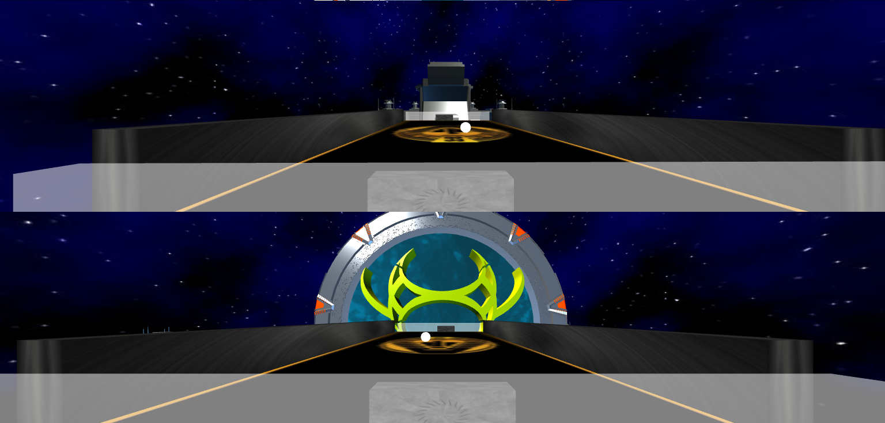

Thibault Campagne
SG1, Au rapport !
Introduction
Ce projet a été réalisé dans le cadre du Master Technologies de l'Internet de l'UPPA, en cours de Simulation et Animation encadré par Mr Jobard.
Il consiste à réaliser une variante du Pong avec la bibliothèque Three.js en Javascript.
Déroulement du jeu
Le jeu commence sur une simulation d'un hyperespace, permettant de masquer le chargement de la scène. L'hyperespace est une simple image déformée grâce aux keyframes en CSS
Afin de faire apparaître la scène, il faut cliquer :
Soit sur le premier lien qui permet d'afficher la scène de jeu solo avec une seule caméra
Soit sur le deuxième lien qui permet d'afficher la scène avec deux caméras (écran scindé), ce qui permet d'affronter un autre joueur en face à face sur le même écran
Les trois manches sont disponibles via un menu afin de simplifier les tests. Ce sont les mêmes modes de jeu avec quelques différences :
La vitesse de la balle varie
Le symbole de l'advsersaire est différent
L'adversaire est plus rapide
Chaque manche se joue en 3 points
Chaque joueur dispose d'un bouclier
Technologies Logicielles
Le jeu tourne dans un navigateur web. Quelques différences sont visibles selon le navigateur, mais également selon le Système d'Exploitation
Liste des technologies utilisées
Three.js → Développement en 3D dans un navigateur web
howler.js → Gestion de l'audio
Blender → Modélisation 3D des éléments complexes et extraction en Json
Pour tester le projet, il faut impérativement l'héberger sur un serveur. Pour ma part, j'ai effectué deux tests
Création d'un projet HTML sur NetBeans avec les sources existantes. NetBeans dispose d'un serveur localhost et permet donc de lancer les fichiers directement dans un navigateur
Copier / Coller le projet dans le dossier www du serveur wamp, puis lancer wamp, et y accéder via localhost
J'ai pu constater un très bon rendu sur le navigateur Google Chrome sur Windows, ainsi que sur Chromium sur Ubuntu. Le rendu est plus lent sur Mozilla Firefox, et l'animation d'hyperespace ne fonctionne pas sur ce navigateur en utilisant Ubuntu
Étant administrateur du site web d'un expert comptable, il m'a autorisé à héberger ce projet sur son serveur OVH →
Lien
Fenêtre Graphique 3D
La scène s'adapte automatiquement à la taille de la fenêtre, en temps réel
Il est possible d'afficher le jeu en plein écran avec la touche "f"
Il est possible de prendre une capture d'écran avec la touche "p"
Architecture Logicielle
Le code Javascript a été séparé en plusieurs fichiers afin de faciliter le développement :
Actions.js → Gestion des différentes phases du jeu
Adversaire.js → Gestion de l'IA de l'adversaire
Audio.js → Gestion des sons
Collisions.js → Gestion des collisions avec les objets de l'environnement (raquettes, murs, obstacles, jokers)
Draws.js → Gestion des modélisations des objets 3D
Gameplay.js → Gestion des touches interactives
Hub.js → Gestion des affichages des messages
Match.js → Gestion du rendu
Score.js → Gestion des collisions avec le bouclier, et du score
Variables.js → Toutes les variables globales du jeu. Beaucoup sont des booléens
Graphisme
Le décor choisi est une référence à la célèbre série télévisée : Stargate SG1
L'espace est une simple texture apliquée sur une sphère
Le terrain de jeu dispose d'une texture mettant en avant le logo de l'équipe SG1, et est situé sur un vaisseau spatial
L'ennemi est représenté par un symbole Égyptien, comme dans la série ou tous les protagonistes ennemis détiennent des tatouages de ces symboles
L'effet de post-processing est l'effet "Glitch". Il n'est pas désactivable puisque il n'est réalisé qu'en chargeant la scène après la sortie de l'hyperespace.
Les vaisseaux et la porte sont des modèles importés de Blender en Json
L'animation réalisé sur la porte des étoiles est une modification du fichier "water-material.js" qui représentait avant cela, un océan très étendu. J'ai dû le modifier afin d'enlever l'effet miroir, mais également pour ne l'appliquer que sur une petite surface. Cela rend bien sur Google Chrome, mais je constate quelques imperfections sur Mozilla Firefox ainsi que Chromium
Les textures des murs, raquettes, terrain sont de simples images retravaillées afin d'obtenir un meilleur rendu
À gauche, c'est un rendu qui expose les principaux atouts graphiques du jeu. J'ai mis en avant le symbole de l'ennemi de la manche 1. De plus, j'active et désactive le bouclier à intervalle régulier, afin de montrer l'animation associée. L'OrbitControl est activé donc il est possible d'interagir avec cette scène (pour zoomer, il faut cliquer sur la molette et non pas scroller)
Dialogues avec l'utilisateur



À chaque début de manche, un message s'affiche aisni qu'un compteur
Les 3 manches étant disponibles, il n'y a pas de messages de transition entre les niveaux
La touche h permet d'afficher le récapitulatif des raccourcis clavier disponibles
Points de vue caméra
Comme demandé dans le cahier des charges, 3 vues caméra sont implémentées
Touche 0 → Vue fixe par rapport au plateau
Touche 1 → Vue attachée à la raquette
Touche 2 → Vue du dessus
Pour le mode en écran scindé, les deux caméras sont attachées à chaque raquette
Gestion des collisions
Au début du projet, j'ai utilisé le Raycaster pour gérer les collisions. Puis, j'ai trouvé qu'il n'était pas forcément pertinent de l'utiliser pour un jeu à l'environnement aussi fermé.
Pour la détection de toutes les collisions, j'ai donc développé plusieurs fonctions. Leurs objectifs est de détecter la position de la balle et des objets testés, tout en prenant en compte le rayon de la balle et la profondeur de ces objets, afin de détecter une collision
Les traitement effectués dans ces fonctions sont des traitement que je devais quand même effectuer avec le raycaster, d'ou mon choix de le retirer
Dynamique
La vitesse de la balle augmente au cours des échanges. De plus, en fonction du niveau, elle commence à une certaine vitesse
La direction de la balle peut être influencée en fonction du rebond sur la raquette
Si la raquette est immobile, l'axe de la balle varie en fonction de l'endroit ou il y a collision
Pile au milieu → la balle part sur un axe droit
À droite → en fonction de l'éloignement du centre de la raquette, la balle a un axe qui part plus ou moins à droite
À gauche → même gestion qu'à droite mais vers la gauche
Si la raquette est en déplacement, l'axe de la balle peut varier de façon plus importante
Si la raquette se déplace vers la gauche, la balle part vers la gauche
Si la raquette se déplace vers la droite, la balle part vers la droite
L'inertie est implémentée, elle est réalisée quand le joueur décide de stopper la raquette. Dans ce cas-là, la raquette ralentit plus doucement. L'inertie est activable / désactivable en pressant la lettre G
Jokers
Des jokers peuvent être appelés avec la touche J
Il y en a deux types :
Un joker santé qui recharge le bouclier si besoin. Il est facilement reconnaissable avec sa croix rouge
Un joker qui rallonge la raquette. La texture est le logo de la seconde équipe Stargate, pour montrer que du "renfort" est appelé
Intelligence artificielle de l'adversaire
L'intelligence artificielle est très basique. La raquette de l'adversaire ne fait que suivre la balle à une vitesse moins importante. Cette vitesse augmente au fil des niveaux
Musiques et sons
Une musique de fond qui est une compilation de celles entendues dans la série est en fond par défaut. Elle est désactivable en cliquant sur l'icône de son en haut à droite de l'écran
Des sons sont activées sur certaines collisions
○ Son sur collision avec une raquette →
Balise audio
○ Son sur collision avec un bouclier →
Balise audio
○ Son sur un point marqué →
Balise audio
Triche
Touche i → Vous devenez invincible, la balle est perçue comme une pichenette contre votre bouclier surpuissant
Touche j → Vous appelez un joker, c'est vous qui commandez après tout
Touche k → D'un seul souffle, le bouclier de votre pire ennemi s'évapore
Touche Espace → Vous arrêtez le temps. À la base, cette fonctionnalité était prévu pour mettre sur pause, mais autant en profiter quand on veut juste repositionner sa raquette au bon endroit !
Les petits plus !
Le jeu détient beaucoup de références à la série et il est plaisant à regarder quand on en est fan
Si on ne connaît pas la série, le jeu reste tout de même agréable à regarder
De par son développement, le jeu est facile à modifier. En effet, même si cela a été long à comprendre et à mettre en place, l'utilisation de simples booléens sur toutes les fonctionnalités permet de pouvoir apporter de nouvelles choses facilement
En petit bonus, afin de voir ce que rendait deux caméras sur une même scène, j'ai réalisé un écran scindé pour pouvoir jouer à deux. Ce n'est pas forcément magnifique, mais cela m'a permis de comprendre comment utiliser deux vues différentes sur une même scène

Conclusion
Ce projet a été très instructif pour moi qui suis passionné par le développement web. J'ai beaucoup appris sur une technologie que je trouve assez puissante. Mon seul regret est de ne pas avoir codé en orienté objet. En effet, j'ai commencé dès le début à développé le jeu en séquentiel, et quand je me suis rendu compte qu'il était possible de faire du développement orienté objet en Javascript, il était trop tard pour reculer. Je pense que cela m'aurait permis d'optimiser au maximum mon jeu.
Ayant beaucoup hésité sur le décor, et n'étant pas parfaitement satisfait de mon rendu, j'ai appris qu'il était très difficile de réaliser des jeux finis, il y a toujours des améliorations possibles.
Et maintenant, trêve de bavadarges, à vous de jouer !